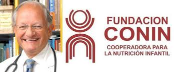

Conocenos
¿Que es conin?

CONIN es una Organización Sin Fines de Lucro fundada por el Dr. Abel Pascual Albino en la provincia de Mendoza, en la Argentina, el 4 de septiembre de 1993. Albino tomó el método de CONIN Chile, ideado por su fundador el Dr. Fernando Mönckeberg. Su lucha contra la desnutrición infantil hizo de Chile un país con altos estándares en salud, baja mortalidad infantil, e indicadores de desarrollo humano y social superiores a los de países con ingreso per cápita de similar cuantía. El método chileno (Centros de Tratamiento) fue complementado en Argentina con los Centros de Prevención de Desnutrición Infantil y Promoción Humana.